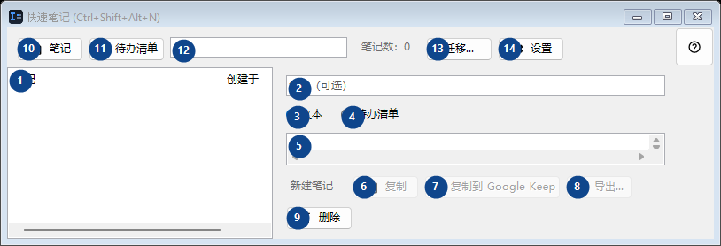
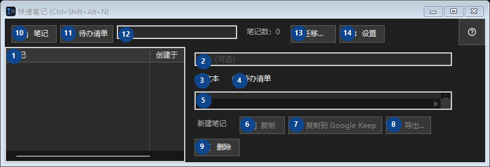

快速笔记 (Ctrl+Shift+Alt+N)
用途
一个小小的本地记事本：用快捷键打开，扔进一段代码或一个想法，关掉。


使用顺序
阅读编号说明，选择所需值，然后使用窗口命令继续。
界面元素
1. 界面元素
此区域显示当前内容或状态。选择条目后即可操作。 笔记 / 创建于
你的快捷键2. 选择或输入旁边标签所指的值。继续前请检查。
选择或输入旁边标签所指的值。继续前请检查。
你的快捷键3. 文本
需要执行上述操作时使用此命令。接受前请阅读确认提示。
你的快捷键4. 待办清单
需要执行上述操作时使用此命令。接受前请阅读确认提示。
你的快捷键5. 选择或输入旁边标签所指的值。继续前请检查。
选择或输入旁边标签所指的值。继续前请检查。
你的快捷键6. 复制
需要执行上述操作时使用此命令。接受前请阅读确认提示。 此控件当前不可用。请先启用相应功能或选择条目。
你的快捷键7. 复制到 Google Keep
需要执行上述操作时使用此命令。接受前请阅读确认提示。 此控件当前不可用。请先启用相应功能或选择条目。
你的快捷键8. 导出...
需要执行上述操作时使用此命令。接受前请阅读确认提示。 此控件当前不可用。请先启用相应功能或选择条目。
你的快捷键9. 删除
需要执行上述操作时使用此命令。接受前请阅读确认提示。
你的快捷键10. 笔记
需要执行上述操作时使用此命令。接受前请阅读确认提示。
你的快捷键11. 待办清单
需要执行上述操作时使用此命令。接受前请阅读确认提示。
你的快捷键12. 笔记数：0
选择或输入旁边标签所指的值。继续前请检查。
你的快捷键13. 迁移...
需要执行上述操作时使用此命令。接受前请阅读确认提示。
你的快捷键14. 设置
需要执行上述操作时使用此命令。接受前请阅读确认提示。
你的快捷键